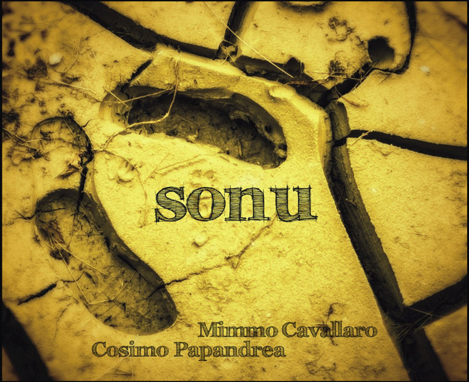

Inarrestabile fenomeno della musica popolare nazionale, in perfetto equilibrio tra "tradizione" e "innovazione", i Taranproject di Mimmo Cavallaro e Cosimo Papandrea sono i più importanti rappresentanti della moderna tarantella calabrese.
I Taranproject sono i nuovi portavoce di una terra pronta a riscattarsi attraverso la sua musica, una musica che sa essere antica eppure moderna, che racchiude in se l'antico sentimento di un popolo e lo proietta verso il futuro.
I Taranproject sono i nuovi portavoce di una terra pronta a riscattarsi attraverso la sua musica, una musica che sa essere antica eppure moderna, che racchiude in se l'antico sentimento di un popolo e lo proietta verso il futuro.
Taranproject
I TaranProject si formano nella primavera del 2009 per iniziativa di Mimmo Cavallaro, cantautore già attivo da dieci anni, inserito tra gli artisti della Taranta Power di Eugenio Bennato, accanto al quale si è esibito in Italia e in vari paesi europei. Nascono inizialmente come gruppo destinato ad accompagnare Cavallaro nella tournée con cui presenterà il suo cd "Sona Battenti", pubblicato pochi mesi prima e premiato come "miglior album di musica popolare del 2009" al Festival della Cicala di Napoli. Ne fanno parte Andrea Simonetta alla chitarra e Carmelo Scarfò al basso - già con Cavallaro in precedenti formazioni - e Alfredo Verdini al tamburello e percussioni; si aggiunge poi Giovanna Scarfò, seconda voce e danze. In numerosi concerti è ospite sul palco anche Cosimo Papandrea - canto, organetto e lira calabrese, già leader dei SonuDivinu - che ben presto entra stabilmente nel gruppo, apportandovi le proprie composizioni. La denominazione definitiva diviene "Mimmo Cavallaro e Cosimo Papandrea TaranProject".
Il repertorio include quindi i brani di "Sona Battenti" e quelli recentemente incisi per il progetto "Karakolo Fool", nel quale Cavallaro e Papandrea già avevano collaborato nei mesi precedenti. Si tratta per lo più di canti della tradizione popolare calabrese, rielaborati e confezionati in forma canzone con particolare cura negli arrangiamenti, e con un impatto ritmico possente e dinamico, che funzionerà da lasciapassare presso larghe fette di pubblico non avvezzo alla musica folk. La vocalità di Mimmo Cavallaro e la presenza scenica di Cosimo Papandrea sono i punti di forza della formula, che poggia anche sulla compattezza del gruppo, trascinante nella dimensione live, e sulla ricercatezza delle soluzioni armoniche; l'utilizzo del dialetto calabrese, che all'orecchio estraneo risulta di ardua comprensione ma rivela sorprendente musicalità, è un ulteriore elemento caratteristico.
Le numerose esibizioni (un centinaio da maggio a dicembre), quasi tutte nelle località della Locride, la zona di cui i musicisti sono originari, registrano un successo crescente, fino a scatenare un'autentica passione collettiva: le piazze dei paesi sono gremite di persone di ogni età, dagli anziani che ritrovano le canzoni del loro passato e la voglia di ballare la tarantella all'uso antico, fino ai giovani che, attratti dalle sonorità rock, riscoprono le radici dimenticate della cultura musicale della loro terra. Il loro brano simbolo è senza dubbio "Spagna", che riprende un testo già proposto anni addietro da Otello Profazio con una nuova melodia, e diviene la colonna sonora dell'estate locridea.
Ne scaturisce un fenomeno che assume un rilievo anche sociale, all'insegna della partecipazione e della condivisione intergenerazionale, tanto più significativo in un territorio dove la vita civile deve fare i conti con la presenza della 'ndrangheta; varie rubriche della Rai, come TG3 Linea Notte, TG3 Mediterraneo e TG2 Mizar, hanno trasmesso servizi sul tema, con interviste a Mimmo Cavallaro. Lo scrittore Gianluca Albanese fa dei TaranProject i protagonisti della storia di fantasia raccontata nel romanzo "Taranta revolution" (Laruffa Editore, 2010)
Dalla loro affermazione ha inizio un vero e proprio revival della musica calabrese - che per anni era stata accantonata, in qualche caso addirittura negata, o tacciata di familiarità con ambienti legati alla malavita organizzata - con il fiorire di scuole di musica e di danza, e il formarsi di numerosi nuovi gruppi che seguono le orme dei TaranProject; emblematica è la riscoperta della lira calabrese, strumento ad archetto dal suono incantevole, in uso nella Locride fino agli anni Cinquanta, di cui si era quasi perso il ricordo (se non per la preziosa opera di recupero compiuta da Ettore Castagna, Sergio Di Giorgio, Goffredo Plastino e Emilio Rinaldo dei Re Niliu, negli anni Ottanta) e che ora viene di nuovo costruita e suonata.
Nella primavera 2010 entra in pianta stabile nel gruppo Gabriele Albanese, pipita, sax e fiati, anche lui già in Karakolo Fool, che completa la attuale formazione a sette. In aprile rappresentano la musica calabrese al Vinitaly, a Verona. In giugno, nella suggestiva cornice del sito archeologico di Locri, i TaranProject presentano le loro nuove composizioni, che formeranno il cd "Hjuri di Hjumari" (Fiori di fiumare), definendo compiutamente il loro stile: il ritmo terzinato delle tarantelle si fonde con una molteplicità di apporti sonori eterogenei, ambizioso progetto artistico che si traduce in una miscela originale ed emotivamente ricca. Il disco viene pubblicato alla fine di agosto, a conclusione del secondo tour estivo, e va presto esaurito. Partecipano in Puglia alla Notte della Taranta.
Nel 2011, siglano un contratto con l'etichetta Compagnia Nuove Indye, che pubblica la nuova versione, rimissata, del cd "Hjuri di Hjumari". Si esibiscono varie volte a Roma e altrove in Italia, e suonano anche in Francia, Svizzera, Lussemburgo, Canada. Compaiono quattro volte in televisione, ospiti del programma "I fatti vostri" su Rai 2. Immancabile e sempre attesissima, inoltre, è la loro presenza al Kaulonia Tarantella Festival, ogni anno a fine agosto. Dal 2012 Mimmo Cavallaro ne è il direttore artistico.
A marzo 2012 esibendosi al Teatro Cilea di Reggio Calabria portano la tarantella nel tempio della musica colta. A fine aprile esce il cd "Rolica", frutto della collaborazione con il noto cantante e showman Marcello Cirillo, che condivide con Mimmo Cavallaro il luogo di nascita, Caulonia. Alle atmosfere già conosciute con "Hjuri di Hjumari" si affianca in qualche brano una più spiccata vocazione melodica, che amplia le potenzialità espressive del gruppo. I TaranProject vengono scelti per aprire il Concerto del Primo Maggio a Roma, di fronte a 800.000 persone che accolgono festosamente la loro proposta musicale.
Dopo il tour estivo del 2013, con cui presentano il nuovo cd "Sonu", il numero complessivo dei loro concerti supera quota 500.
Nel 2014 sono nuovamente a Roma, assieme al cantautore Daniele Ronda, sul palco del Concerto del Primo Maggio.
Il repertorio include quindi i brani di "Sona Battenti" e quelli recentemente incisi per il progetto "Karakolo Fool", nel quale Cavallaro e Papandrea già avevano collaborato nei mesi precedenti. Si tratta per lo più di canti della tradizione popolare calabrese, rielaborati e confezionati in forma canzone con particolare cura negli arrangiamenti, e con un impatto ritmico possente e dinamico, che funzionerà da lasciapassare presso larghe fette di pubblico non avvezzo alla musica folk. La vocalità di Mimmo Cavallaro e la presenza scenica di Cosimo Papandrea sono i punti di forza della formula, che poggia anche sulla compattezza del gruppo, trascinante nella dimensione live, e sulla ricercatezza delle soluzioni armoniche; l'utilizzo del dialetto calabrese, che all'orecchio estraneo risulta di ardua comprensione ma rivela sorprendente musicalità, è un ulteriore elemento caratteristico.
Le numerose esibizioni (un centinaio da maggio a dicembre), quasi tutte nelle località della Locride, la zona di cui i musicisti sono originari, registrano un successo crescente, fino a scatenare un'autentica passione collettiva: le piazze dei paesi sono gremite di persone di ogni età, dagli anziani che ritrovano le canzoni del loro passato e la voglia di ballare la tarantella all'uso antico, fino ai giovani che, attratti dalle sonorità rock, riscoprono le radici dimenticate della cultura musicale della loro terra. Il loro brano simbolo è senza dubbio "Spagna", che riprende un testo già proposto anni addietro da Otello Profazio con una nuova melodia, e diviene la colonna sonora dell'estate locridea.
Ne scaturisce un fenomeno che assume un rilievo anche sociale, all'insegna della partecipazione e della condivisione intergenerazionale, tanto più significativo in un territorio dove la vita civile deve fare i conti con la presenza della 'ndrangheta; varie rubriche della Rai, come TG3 Linea Notte, TG3 Mediterraneo e TG2 Mizar, hanno trasmesso servizi sul tema, con interviste a Mimmo Cavallaro. Lo scrittore Gianluca Albanese fa dei TaranProject i protagonisti della storia di fantasia raccontata nel romanzo "Taranta revolution" (Laruffa Editore, 2010)
Dalla loro affermazione ha inizio un vero e proprio revival della musica calabrese - che per anni era stata accantonata, in qualche caso addirittura negata, o tacciata di familiarità con ambienti legati alla malavita organizzata - con il fiorire di scuole di musica e di danza, e il formarsi di numerosi nuovi gruppi che seguono le orme dei TaranProject; emblematica è la riscoperta della lira calabrese, strumento ad archetto dal suono incantevole, in uso nella Locride fino agli anni Cinquanta, di cui si era quasi perso il ricordo (se non per la preziosa opera di recupero compiuta da Ettore Castagna, Sergio Di Giorgio, Goffredo Plastino e Emilio Rinaldo dei Re Niliu, negli anni Ottanta) e che ora viene di nuovo costruita e suonata.
Nella primavera 2010 entra in pianta stabile nel gruppo Gabriele Albanese, pipita, sax e fiati, anche lui già in Karakolo Fool, che completa la attuale formazione a sette. In aprile rappresentano la musica calabrese al Vinitaly, a Verona. In giugno, nella suggestiva cornice del sito archeologico di Locri, i TaranProject presentano le loro nuove composizioni, che formeranno il cd "Hjuri di Hjumari" (Fiori di fiumare), definendo compiutamente il loro stile: il ritmo terzinato delle tarantelle si fonde con una molteplicità di apporti sonori eterogenei, ambizioso progetto artistico che si traduce in una miscela originale ed emotivamente ricca. Il disco viene pubblicato alla fine di agosto, a conclusione del secondo tour estivo, e va presto esaurito. Partecipano in Puglia alla Notte della Taranta.
Nel 2011, siglano un contratto con l'etichetta Compagnia Nuove Indye, che pubblica la nuova versione, rimissata, del cd "Hjuri di Hjumari". Si esibiscono varie volte a Roma e altrove in Italia, e suonano anche in Francia, Svizzera, Lussemburgo, Canada. Compaiono quattro volte in televisione, ospiti del programma "I fatti vostri" su Rai 2. Immancabile e sempre attesissima, inoltre, è la loro presenza al Kaulonia Tarantella Festival, ogni anno a fine agosto. Dal 2012 Mimmo Cavallaro ne è il direttore artistico.
A marzo 2012 esibendosi al Teatro Cilea di Reggio Calabria portano la tarantella nel tempio della musica colta. A fine aprile esce il cd "Rolica", frutto della collaborazione con il noto cantante e showman Marcello Cirillo, che condivide con Mimmo Cavallaro il luogo di nascita, Caulonia. Alle atmosfere già conosciute con "Hjuri di Hjumari" si affianca in qualche brano una più spiccata vocazione melodica, che amplia le potenzialità espressive del gruppo. I TaranProject vengono scelti per aprire il Concerto del Primo Maggio a Roma, di fronte a 800.000 persone che accolgono festosamente la loro proposta musicale.
Dopo il tour estivo del 2013, con cui presentano il nuovo cd "Sonu", il numero complessivo dei loro concerti supera quota 500.
Nel 2014 sono nuovamente a Roma, assieme al cantautore Daniele Ronda, sul palco del Concerto del Primo Maggio.
Discografia
Tutti gli album sono acquistabili su CNI Music, iTunes, ed Amazon store.
Tour
21 giu
Marina di S. Lorenzo
28 giu
San Pietro Apostolo
05 lug
Pellaro
Centro Commerciale Porto Bolaro
26 lug
Jacurso
02 ago
Filadelfia
03 ago
San Calogero
04 ago
Polistena
09 ago
Saracena
10 ago
Sicigliano
11 ago
Arena
12 ago
Pagliarelle di Petilia Policastro
13 ago
Melito di Porto Salvo
15 ago
Delianuova
16 ago
Girifalco
17 ago
Spina di Rizziconi
24 ago
Stelletanone di Laureana di Borrello
27 set
Pieve Emanuele
Festival Magna Grecia
Trasmissione "Mimmo Cavallaro - Cosimo Papandrea - Taranproject SONU TOUR 2013 Video Calabria
Mimmo Cavallaro & Cosimo Papandrea FEATURING Nour Eddine Fatty (Marocco)
Mimmo Cavallaro & Cosimo Papandrea - TaranProject (VURRIA : canta Giovanna Scarfò)
Cosimo Papandrea - SPAGNA - www.taranproject.it
Mimmo Cavallaro & Cosimo Papandrea TaranProject al Concertone del Primo Maggio 2012 - Roma
{kind=link}
{kind=link}
{kind=link}
{kind=link}
{kind=link}
{kind=link}
{kind=link}
{kind=link}
{kind=link}
{kind=link}
{kind=link}
{kind=link}
Contatti
PER CONCERTI ED EVENTI:
CNI Management | Massimo Bonelli
tel. +39 346 136 5800
email: bonelli@cnimusic.it
COMPAGNIA NUOVE INDYE | CNI MUSIC
Via Antonio Vivaldi, 9 - 00199 Roma - Italy
via Luigi Settembrini, 30 - 00195 Roma - Italy
tel. +39 06.86212085 | +39 06.86326599 | fax +39 06.64812331
www.cnimusic.it | www.cnilive.it | www.cnidistribuzione.it www.cnimusiceurope.eu
CNI Management | Massimo Bonelli
tel. +39 346 136 5800
email: bonelli@cnimusic.it
COMPAGNIA NUOVE INDYE | CNI MUSIC
Via Antonio Vivaldi, 9 - 00199 Roma - Italy
via Luigi Settembrini, 30 - 00195 Roma - Italy
tel. +39 06.86212085 | +39 06.86326599 | fax +39 06.64812331
www.cnimusic.it | www.cnilive.it | www.cnidistribuzione.it www.cnimusiceurope.eu